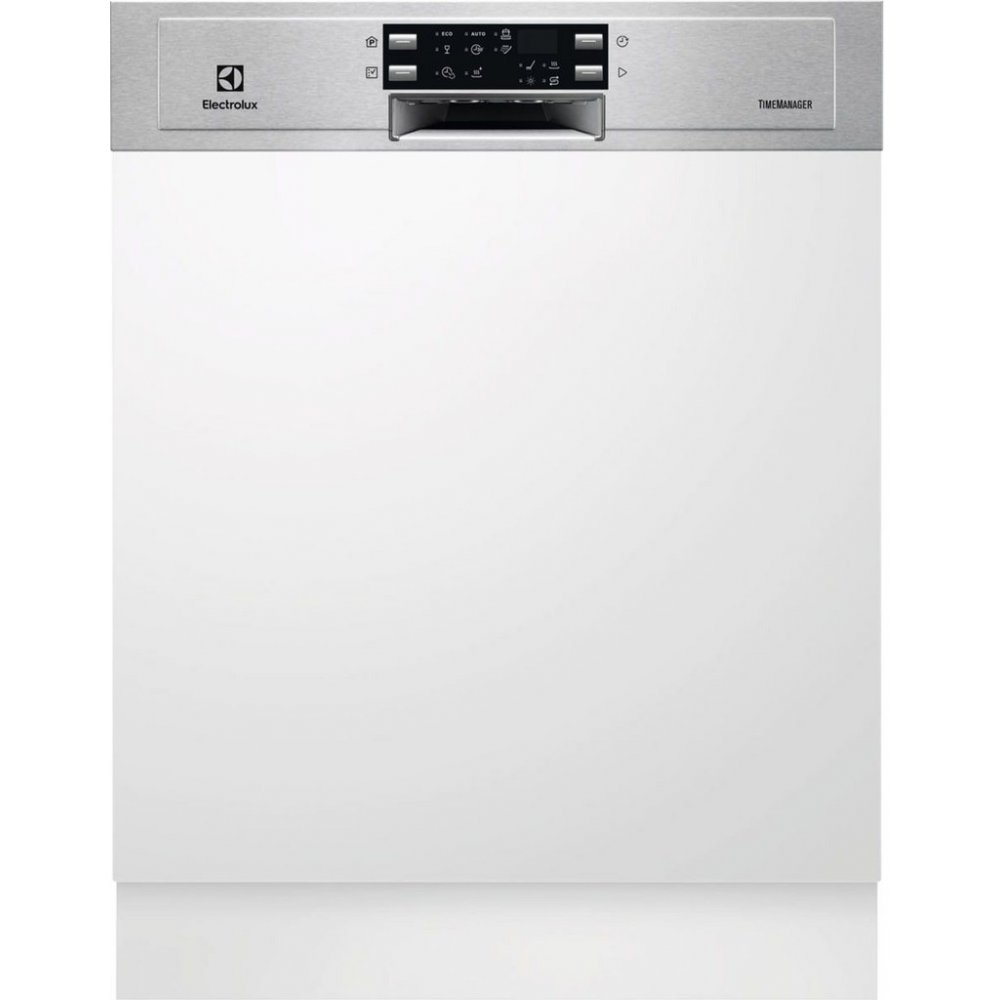
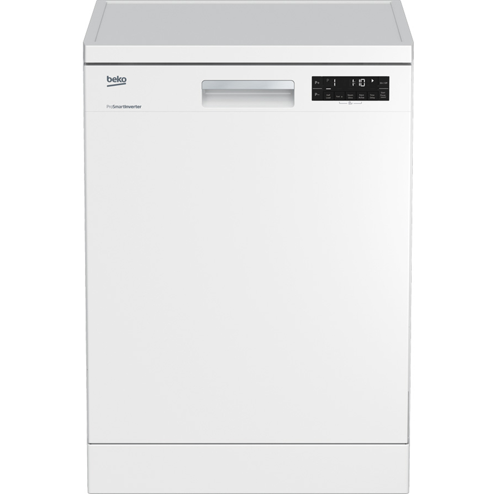
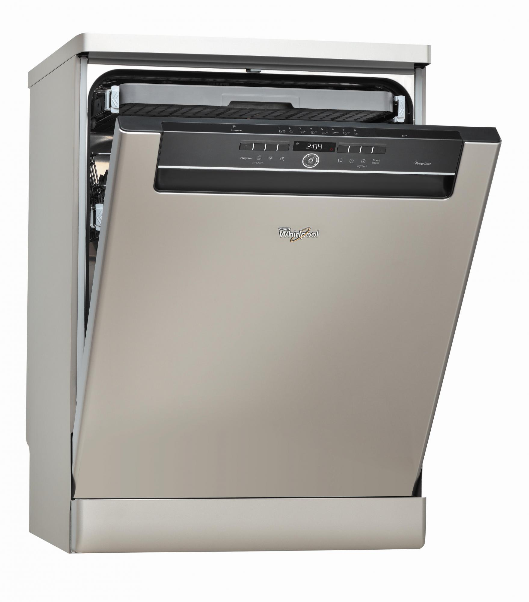
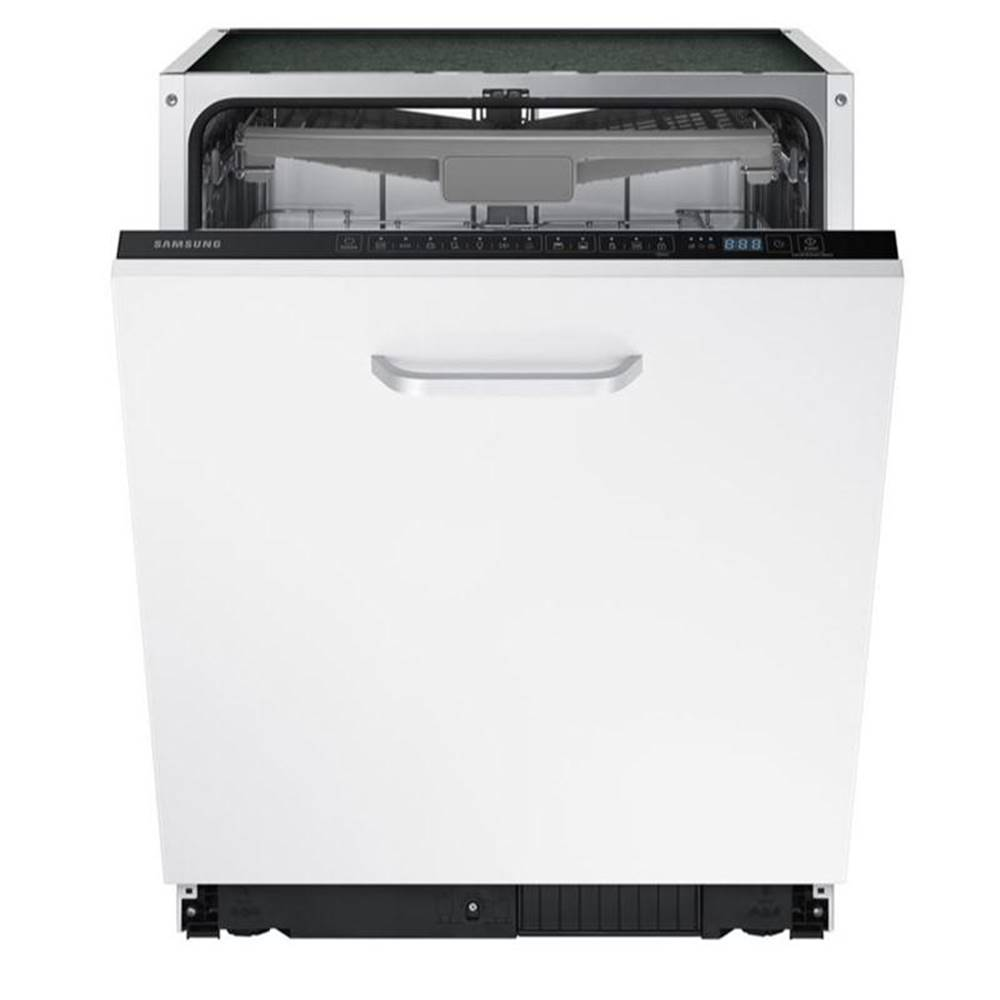

Bosch SMS58N88EU
FunkciaVarioSpeedskráti umývací program. Vďakadávkovaciemu asistentovisa tableta kontrolovane a úplne rozpustí a zaručí
tak dokonalý výsledok umývania.AquaSenzorzasa reguluje spotrebu vody v závislosti na sile a druhu znečisteného riadu.
Pre uloženie príborov slúži praktická príborová zásuvka, ktorá ušetrí miesto v dolných košoch.
Výškovo nastaviteľný horný kôš umožňuje veľmi pohodlné vkladanie tanierov alebo neskladného riadu.
Výrobca: Bosch
Spotreba energie: 0,9 kWh/cyklus
Spotreba vody: 9,5 l/cyklus
Počet programov: 5
Rozmery: 84,5 × 60 × 60 cm
CENA: 435,00 €

Electrolux ESI9516LOX
Vstavaná umývačka riadu vhodná na 14 súprav riadu. Je priestranná, tichá a výkonná. Dvojito rotujúce sprchovacie rameno
SatelliteClean neustále mení uhol ostreku a zaistí krásne čistý riad. Technológia AirDry využívajúca prirodzené prúdenie
vzduchu sa postará o dokonale suchý riad.
Výrobca: Electrolux
Spotreba energie: 0,95 kWh/cyklus
Spotreba vody: 10,5 l/cyklus
Počet programov: 6
Rozmery: 59,6 × 81,8 × 57,5 cm
CENA: 589,00 €

Beko DFN 28430W
Zásluhou dômyselného usporiadania vnútorného priestoru sa do tejto voľne stojacej umývačky pohodlne zmestí až 14 súprav riadu.
Vďaka tomu pracuje úspornejšie než spotrebiče s menšou kapacitou. Na tejto vlastnosti má svoj podiel i špeciálny kôš Acrobat,
ktorý jednoducho nastavíte do jednej z troch výškových polôh
Výrobca: Beko
Spotreba energie: 0,85 kWh/cyklus
Spotreba vody: 9,5 l/cyklus
Počet programov: 6
Rozmery: 85 x 59,8 x 60 cm
CENA: 459,00 €

Whirlpool ADP 7570 IX
Multizone je mimoriadne efektívna voľba umožňuje použiť pre umývanie iba horný alebo iba dolný kôš.
Pri umývaní iba v dolnom koši je možné horný kôš vybrať z umývačky a umývať aj rozmerné riady, ako sú napríklad plechy na pečenie.
Výrobca: Whirlpool
Spotreba energie: 0,92 kWh/cyklus
Spotreba vody: 9 l/cyklus
Počet programov: 8
Rozmery: 85 x 59,7 x 59 cm
CENA: 419,00 €

Samsung DW DW60M6050BB/EO
Nerezová vaňa absorbuje hluk a vibrácie a tým je zaistená nízka hlučnosť 44 dB. Ani v knižnici nie je také ticho.
Express Wash je ideálnym programom na štandardne špinavý riad, ktoré umývačka zvládne umyť a usušiť do 1 hodiny.
Výrobca: Samsung
Spotreba energie: 0,95 kWh/cyklus
Spotreba vody: 10,5 l/cyklus
Počet programov: 4
Rozmery: 81,5 x 59,8 x 55 cm
CENA: 457,00 €